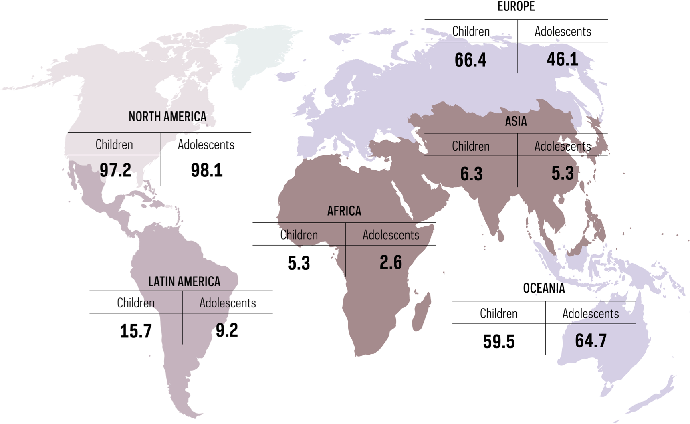
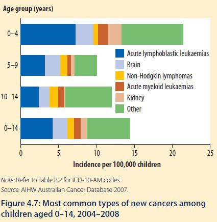
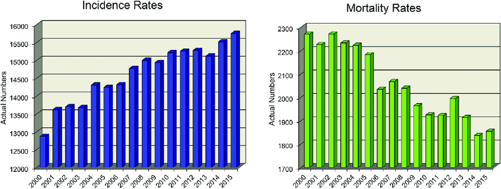

Some Statistics about Childhood Cancer

According to the World Health Organisation, India is home to at least 20% of the global childhood cancer cases(4 Lakh), with nearly 75,000 kids getting diagnosed with cancer every year.
In children under 15, leukemia makes up 28% of all childhood cancers diagnosed. The next most common type of childhood cancer is brain cancer (26%), followed by lymphoma (12%).
Rate of cancer cases in children and teens have slowly increased since 1975, but that rate stabilized between the years 2010 and 2019. However, rates in teens continue to increase by around 1% every year.
Between the years 1970 and 2020, the number of deaths caused by cancer in children and teens has decreased by more than 50%. It is because of increased participation of the patients in clinical trials and advancement of treatment.
Cancer is the top disease-related cause of death for children and teens. After accidents, cancer remains the 2nd leading cause of death in children under age 15.
Despite of such a great advancement in medicine, some types of cancer are still incurable, even for the curable cancers, treatment is not available and affordable to everyone.
In the developed countries there is a higher rate of child cancer than the developing countries, lack of awareness about cancer can be a major cause for this.
Life expectancy for the five year old childhood cancer survivors has steadily increased. Life expectancy for those survivors, treated in the 1970's is only 48.5 years while those treated in the 1990's impressively rose to 57.1 years.

